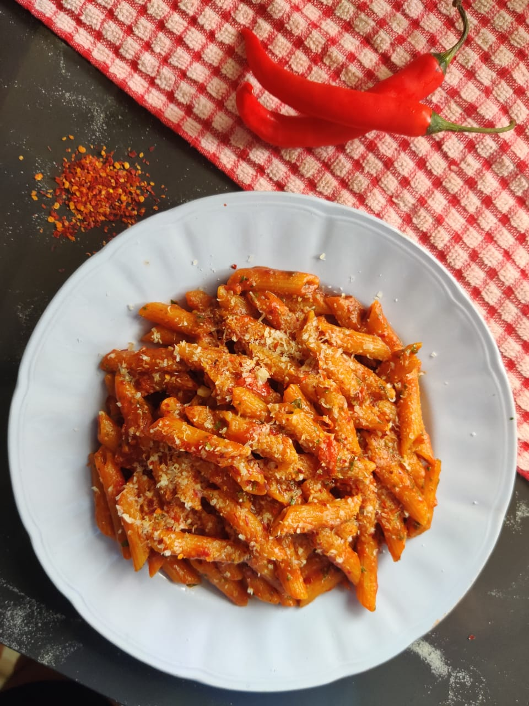

Don't be fooled by the arrabbiata's appearance, it packs a huge kick of heat under its tomato guise.
Intensified by actual chili and chili flakes, this angry dish is sure to keep your tongue crying for mercy.